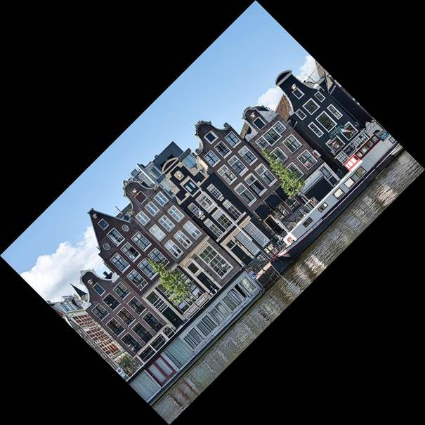
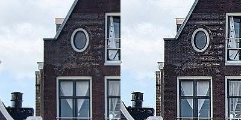
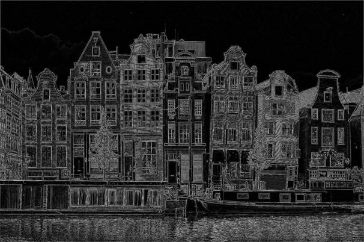
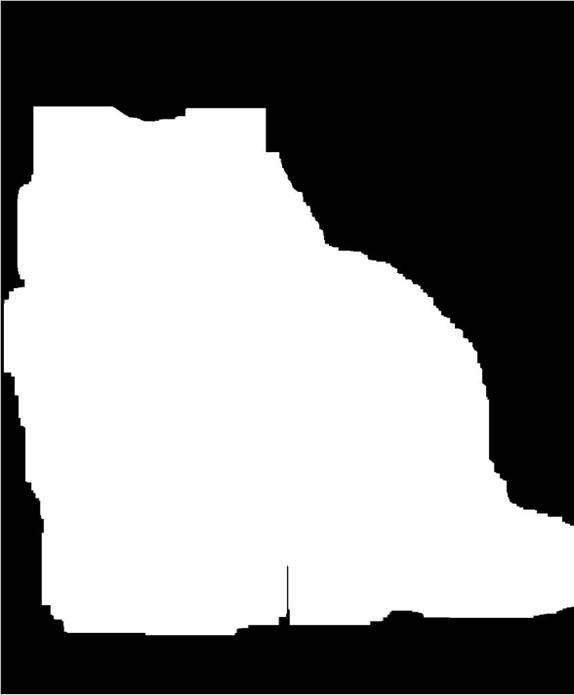

Графика в Пайтон – расширение Pillow (Ранее известное как Pil)
Pillow это развитие PIL — оригинальной библиотеки Python
для работы с изображениями. Несмотря на то, что существуют другие более
продвинутые библиотеки Python для обработки
изображений, Pillow остается важным инструментом для
понимания и работы в целом, кроме того - его инструменты весьма похожи на
инструменты Adobe (photoshop)
Основные операции с изображениями в библиотеке Python
Pillow
Библиотека Python Pillow является
ответвлением более старой библиотеки под названием PIL. PIL расшифровывается
как Python Imaging Library. В Python есть много
модулей для работы с изображениями и их обработки. Если вы хотите работать с
изображениями напрямую, оперируя их пикселями, вы можете использовать NumPy и SciPy. Другими
популярными библиотеками для обработки изображений являются OpenCV,
scikit-image и Mahotas.
Некоторые из этих библиотек быстрее и мощнее, чем Pillow.
Для начинающих однако Pillow является предпочтительным вариантом для задач обработки изображений
высокого уровня, которые не требуют более продвинутых навыков обработки.
Вам нужно будет
установить библиотеку, прежде чем вы сможете ее использовать. Вы можете
установить Pillow с помощью pip
в виртуальной среде (terminal – где мы писали pip install telebot):
PS> python -m venv venv
PS> .\venv\Scripts\activate (venv)
PS> python -m
pip install Pillow
Теперь, когда вы
установили пакет, вы готовы начать знакомство с библиотекой Python
Pillow и выполнять основные операции с изображениями.
Модуль Image и класс Image
в Pillow
Основным классом,
определенным в Pillow, является класс Image. Когда вы читаете изображение с помощью Pillow, оно сохраняется как объект типа Image.
Вы должны помнить что файл с изображения нужно поместить в корневую
папку проекта, в котором работаете. При изучении изображений с помощью Pillow лучше всего использовать интерактивную среду Pyton Console (REPL - первая кнопка
из набора где и кнопка terminal). Начните с открытия
изображения, которое вы только что скачали:
>>> from PIL import Image
>>> filename = "buildings.jpg"
>>> with Image.open(filename) as img:
... img.load()
...
>>> type(img)
<class 'PIL.JpegImagePlugin.JpegImageFile'>
>>> isinstance(img,
Image.Image)
True
Вы можете ожидать
импорта из Pillow, а не из PIL. В конце концов, вы
установили Pillow, а не PIL. Однако Pillow — это ответвление библиотеки PIL. Поэтому вам все
равно придется использовать PIL при импорте в ваш код.
Вы вызываете
функцию open() для чтения изображения из файла
и .load() для чтения в память, чтобы теперь
файл можно было закрыть. Вы используете оператор with для создания менеджера контекста, чтобы обеспечить закрытие файла
после всех операций. В этом примере объект представляет собой тип изображения
JPEG, который является подклассом класса Image, что подтверждается
вызовом isinstance(). Обратите внимание, что и класс, и
модуль, в котором определен класс, имеют одно и то же имя Image. Вы можете отобразить изображение, используя .show():
img.show()
Метод .show() сохраняет
изображение как временный файл и отображает его, используя собственное
программное обеспечение вашей операционной системы для работы с изображениями.
Когда вы запустите приведенный выше код, вы увидите следующее изображение:
 файл building.jpg
файл building.jpg
В некоторых системах вызов .show() блокирует REPL,
пока вы не закроете изображение. Это зависит от операционной системы и программного
обеспечения для просмотра изображений по умолчанию, которое вы используете.
Вам необходимо
ознакомиться с тремя ключевыми свойствами при работе с изображениями в
библиотеке Python Pillow.
Вы можете изучить их, используя атрибуты класса Image .format, .size и .mode:
>>> img.format
'JPEG'
>>> img.size
(1920, 1273)
>>> img.mode
'RGB'
formatпоказывает, с каким типом изображения вы работаете. В данном случае - JPEG. size показывает ширину и высоту изображения. mode (режим) этого изображения -
"RGB".
Часто вам может
понадобиться обрезать и изменить размер изображения. Класс Image
имеет два метода, которые можно использовать для выполнения этих операций: .crop() и .resize():
>>> cropped_img = img.crop((300, 150,
700, 1000))
>>> cropped_img.size
(400, 850)
>>> cropped_img.show()
>>> low_res_img = cropped_img.resize(
... (cropped_img.width
// 4, cropped_img.height // 4)
... )
>>> low_res_img.show()
Аргумент .crop() должен состоять из
четырех элементов, определяющих левый, верхний, правый и нижний края области,
которую вы хотите обрезать. Система координат, используемая в Pillow, назначает координаты (0, 0) пикселю в верхнем левом
углу. Это та же система координат, которая обычно используется для двумерных
массивов. Кортеж из четырех элементов представляет собой следующую область
изображения:
 Область кадрирования
Область кадрирования
Новое изображение, которое .crop() возвращает в
приведенном выше коде, имеет размер 400x850 пикселей. На обрезанном изображении
видно только одно из зданий с исходной картинки:
 Обрезанная часть изображения
Обрезанная часть изображения
В приведенном выше коде
вы также изменяете разрешение обрезанного изображения с помощью .resize(), которому требуется
кортеж в качестве обязательного аргумента. Данный кортеж определяет новую
ширину и высоту изображения в пикселях.
В приведенном выше
примере вы устанавливаете новую ширину и высоту в четверть их исходных
значений, используя оператор деления без остатка (//) и атрибуты изображения .width и .height. Последний вызов show() отображает обрезанное изображение с
измененным размером:
Сжатое изображение
Есть дополнительные
необязательные параметры, которые можно использовать с .resize() для управления
тем, как изображение масштабирутся. В качестве
альтернативы вы можете использовать аналогичный метод масштабирования, используя .reduce():
low_res_img = cropped_img.reduce(4)
Аргумент определяет
коэффициент, на который вы уменьшаете масштаб изображения. Если вы хотите
установить максимальный размер, а не коэффициент масштабирования, вы можете использовать .thumbnail(). Размер эскиза будет
меньше или равен установленному вами размеру.
Примечание. Метод .thumbnail() изменяет объект
изображения, но не возвращает новый объект. Однако методы .crop(), .resize() и .reduce() возвращают новый
объект изображения. Не все методы в библиотеке Pillow
ведут себя одинаково.
Когда вы довольны
возвращенным изображением, вы можете сохранить любой из объектов Image в файл, используя .save():
cropped_img.save("cropped_image.jpg")
low_res_img.save("low_resolution_cropped_image.png")
Как только вы вызываете
метод, он создает файлы изображений в папке вашего проекта. В этом примере одно
из изображений является изображением в формате JPEG, а другое — изображением в
формате PNG. Расширение, которое вы используете в качестве имени файла,
автоматически определяет формат файла. Также вы можете указать формат в
качестве дополнительного необязательного аргумента.
Основные манипуляции с использованием модуля Image
Вы можете оперировать
изображением не только с помощью обрезки и изменения размера. Другим
распространенным методом является поворот или отражение .
Вы можете использовать метод .transpose() для некоторых
преобразований. Продолжайте с той же сессией REPL, которую вы начали в
предыдущем разделе:
converted_img = img.transpose(Image.FLIP_TOP_BOTTOM)
converted_img.show()
Этот код отображает
следующее изображение:
 Перевернутое изображние
Перевернутое изображние
Есть семь опций, которые
вы можете передать в качестве аргументов .transpose():
1. Image.FLIP_LEFT_RIGHT: переворачивает изображение слева
направо, в результате чего получается зеркальное отображение.
2. Image.FLIP_TOP_BOTTOM: переворачивает изображение сверху
вниз.
3. Image.ROTATE_90: поворачивает
изображение на 90 градусов против часовой стрелки.
4. Image.ROTATE_180: поворачивает
изображение на 180 градусов.
5. Image.ROTATE_270: изображение
поворачивается на 270 градусов против часовой стрелки, что соответствует
повороту на 90 градусов по часовой стрелке.
6. Image.TRANSPOSE: перемещает строки и столбцы, используя верхний
левый пиксель в качестве источника, при этом верхний левый пиксель в
перемещенном изображении такой же, как и в исходном изображении.
7. Image.TRANSVERSE: перемещает строки и столбцы, используя нижний левый
пиксель в качестве источника, при этом нижний левый пиксель остается
фиксированным относительно исходной и измененной версиями.
Все параметры поворота, представленные выше, определяют повороты с шагом в
90 градусов. Если вам нужно повернуть изображение на другой угол, вы можете использовать .rotate():
rotated_img = img.rotate(45)
rotated_img.show()
Этот метод поворачивает
изображение на 45 градусов против часовой стрелки, возвращая следующее
изображение:
 Изображение повернуто на 45 градусов
Изображение повернуто на 45 градусов
Данный объект Image имеет тот же размер, что и исходное изображение.
Поэтому на дисплее отсутствуют углы картинки. Вы можете изменить это поведение
с помощью расширенного именованного параметра:
rotated_img = img.rotate(45,
expand=True)
rotated_img.show()
Этот метод возвращает
увеличенное изображение, полностью содержащее повернутое изображение:
Повернутое изображение
увеличенного размера
Вы можете дополнительно
настроить вращение с другими параметрами. Теперь вы изменили размер и
ориентацию картинки. В следующем разделе вы узнаете о различных типах
изображений в библиотеке Python Pillow.
Градации и режимы модуля Image в библиотеке Python Pillow
Изображение представляет
собой двумерный массив пикселей, где каждый пиксель соответствует цвету. Каждый
пиксель может быть представлен одним или несколькими значениями. Например, в
изображении RGB каждый пиксель представлен тремя значениями, соответствующими
значениям красного, зеленого и синего.
Таким образом,
объект Image для изображения RBG содержит три
параметра, по одному для каждого цвета. Изображение RGB размером 100x100
пикселей представлено массивом значений 100x100x3.
Изображения RGBA также
включают значение альфа-параметра, которое содержит информацию о прозрачности
каждого пикселя. Изображение RGBA имеет четыре режима, по одному для каждого из
цветов и четвертый, содержащую альфа-значения. Каждый режим имеет те же
размеры, что и размеры изображения. Таким образом, RGBA-изображение размером
100x100 пикселей представляется массивом значений 100x100x4.
Режим изображения
описывает, с каким типом изображения вы работаете. Pillow
поддерживает большинство стандартных режимов, включая черно-белый (двоичный),
оттенки серого, RGB, RGBA и CMYK. Вы можете найти полный список поддерживаемых
режимов в документации Pillow. Также вы можете
узнать, сколько слоев(режимов) в объекте изображения, используя метод .getbands(), и вы можете
конвертировать между режимами, используя .convert(). Теперь вы будете использовать изображение с именем
«strawberry.jpg»
strawberry.jpg
Режим этого изображения
также RGB. Вы можете преобразовать это изображение в другие режимы. Данный код
использует тот же сеанс REPL, который вы использовали в предыдущих разделах:
>>>
filename = "strawberry.jpg"
>>> with Image.open(filename) as img:
... img.load()
...
>>> cmyk_img = img.convert("CMYK")
>>> gray_img = img.convert("L") # Grayscale
>>> cmyk_img.show()
>>> gray_img.show()
>>> img.getbands()
('R', 'G', 'B')
>>> cmyk_img.getbands()
('C', 'M', 'Y', 'K')
>>> gray_img.getbands()
('L',)
Вы вызываете
.convert() дважды, чтобы
преобразовать изображение RGB в версию CMYK и в версию в градациях серого.
Изображение CMYK похоже на исходное изображение, но закодировано с
использованием режима, характерного для печатных материалов, а не для цифровых
дисплеев. Преобразование в оттенки серого дает следующий результат:
 Изображение в градациях
серого
Изображение в градациях
серого
Выходные данные вызовов .getbands() подтверждают
наличие трех слоев в изображении RGB, четырех слоев в изображении CMYK и одного
слоя в изображении в градациях серого.
Вы можете разделить
изображение на его слои, используя .split(), и объединить отдельные
полосы обратно в объект изображения, используя merge(). Когда вы используете .split(), метод возвращает все
полосы как отдельные объекты изображения. Вы можете проверить это, отобразив
строковое представление одного из возвращенных объектов:
>>> red,
green, blue = img.split()
>>> red
<PIL.Image.Image image mode=L size=1920x1281 at
0x7FDD80C9AFA0>
>>> red.mode
'L'
Режим объекта, который возвращает .split(), — «L», что указывает
на то, что это изображение в градациях серого или же изображение отображает
только значения яркости каждого пикселя.
Теперь вы можете создать
три новых изображения RGB, отображенных к красном, зеленом и синем диапазоне,
используя функцию merge(), которая является функцией
модуля Image:
>>> zeroed_band = red.point(lambda _: 0)
>>> red_merge = Image.merge(
... "RGB", (red, zeroed_band, zeroed_band)
... )
>>> green_merge = Image.merge(
... "RGB", (zeroed_band, green, zeroed_band)
... )
>>> blue_merge = Image.merge(
... "RGB", (zeroed_band, zeroed_band, blue)
... )
>>> red_merge.show()
>>> green_merge.show()
>>> blue_merge.show()
Первый аргумент в
функции merge() определяет слой изображения, которое
вы хотите создать. Второй аргумент содержит отдельные слои, которые вы хотите
объединить в одно изображение.
Один красный режим,
сохраненный в переменной red, представляет собой
изображение в градациях серого с режимом L. Чтобы создать изображение,
показывающее только красный слой, вы объединяете красный диапазон из исходного
изображения с зеленым и синем режимами, которые
содержат только нули. Чтобы создать слой(режим), содержащий повсюду нули, вы
используете метод .point().
Этому методу нужна
функция в качестве аргумента. Используемая функция определяет, как
преобразуется каждая точка. В данном случае вы используете лямбда-функцию,
чтобы сопоставить каждую точку с 0.
Когда вы объединяете
красный режим с зеленым и синим, содержащими нули, вы получаете изображение RGB
с именем red_merge. Таким образом,
созданное вами изображение RGB имеет ненулевые значения только в красном
режиме, но, поскольку это все еще изображение RGB, оно будет отображаться в
цвете.
Вы также повторяете
аналогичный процесс, чтобы получить green_merge и blue_merge, которые содержат изображения RGB с зеленым и синим режимами из исходного
изображения. Код отображает следующие три изображения:

Красное изображение
содержит сильный сигнал в пикселях, представляющих клубнику, потому что эти
пиксели в основном красные. Зеленый и синий каналы показывают эти пиксели как
темные, потому что они имеют малые значения. Исключением являются те пиксели,
которые представляют собой отражение света на поверхности клубники, поскольку
эти пиксели почти белые.
Создание общего изображения из нескольких
Обработка изображений с помощью Pillow в Python
Вы узнали, как обрезать
и поворачивать изображения, изменять их размер и изменять градации цвета
изображений. Однако ни одно из действий, которые вы предприняли до сих пор, не
внесло никаких изменений в содержимое изображения. В этом разделе вы узнаете о
функциях обработки изображений в библиотеке Python Pillow. Вы будете использовать модуль ImageFilter в Pillow.
Фильтры изображений с использованием Convolution Kernels (ядра свертки)
Одним из методов,
используемых при обработке изображений, является свертка изображений с
использованием ядер (Convolution Kernels).
Цель этого урока не в том, чтобы дать подробное объяснение теории обработки
изображений. Если вас интересует наука об обработке изображений, одним из
лучших ресурсов, который вы можете использовать, является Digital Image Processing by Gonzalez and Woods.
Размытие изображения, повышение резкости и сглаживание
Вернемся к изображению
зданий, которое использовали в начале урока. Можно начать новую сессию REPL для этого раздела:
from PIL import Image, ImageFilter
filename = "buildings.jpg"
with Image.open(filename) as img:
img.load()
В дополнение к модулю Image вы также импортируете модуль ImageFilter
из Pillow. Вы можете использовать метод
.filter() для применения
фильтрации к изображению. Этот метод требует ядра свертки в качестве аргумента,
и вы можете использовать одно из нескольких ядер, доступных в модуле ImageFilter в Pillow. Первый
набор фильтров, о котором вы узнаете, касается размытия, повышения резкости и
сглаживания изображения.
Вы можете размыть
изображение с помощью фильтра ImageFilter.BLUR:
blur_img = img.filter(ImageFilter.BLUR)
blur_img.show()
Отображаемое изображение
является размытой версией исходного изображения. Вы можете увеличить масштаб,
чтобы увидеть разницу более подробно, используя .crop(), а затем снова
отобразить изображения, используя .show():
 Два обрезанных изображения показывают
разницу между двумя версиями:
Два обрезанных изображения показывают
разницу между двумя версиями:
Вы можете настроить
необходимый тип и степень размытия, используя ImageFilter.BoxBlur() или ImageFilter.GaussianBlur():
img.filter(ImageFilter.BoxBlur(5)).show()
img.filter(ImageFilter.BoxBlur(20)).show()
img.filter(ImageFilter.GaussianBlur(20)).show()
Теперь имеется три
размытых изображения, показанные в том же порядке, что и в приведенном выше
коде:

Фильтр .BoxBlur() аналогичен
фильтру, описанному в предыдущем разделе, где представлены ядра свертки.
Аргументом является радиус фильтра размытия прямоугольника. В предыдущем
разделе, посвященном ядрам, использовался фильтр рамочного размытия 3x3. Это
означает, что он имел радиус 1, потому что фильтр простирается на один пиксель
от центра.
Размытые изображения
показывают, что прямоугольный фильтр размытия с радиусом 20 создает более
размытое изображение, чем изображение, сгенерированное прямоугольным фильтром
размытия с радиусом 5.
Вы также можете
использовать фильтр .GaussianBlur(), который использует
ядро размытия по Гауссу. Ядро Гаусса придает больший вес пикселям
в центре ядра, чем по краям, и это приводит к более плавному размытию, чем то,
что получается с размытием прямоугольника. По этой причине во многих случаях
размытие по Гауссу может дать лучшие результаты.
Что делать, если вы
хотите повысить резкость изображения? В этом случае вы можете использовать
фильтр ImageFilter.SHARPEN и сравнить
результат с исходным изображением:
sharp_img = img.filter(ImageFilter.SHARPEN)
img.crop((300, 300, 500, 500)).show()
sharp_img.crop((300, 300, 500, 500)).show()
Вы можете сравнить
обрезанную версию обоих изображений, показывающих небольшую часть здания.
 Изображение с резкостью справа
Изображение с резкостью справа
Возможно, вместо
повышения резкости, изображение нужно сгладить. Вы можете добиться этого,
передав ImageFilter.SMOOTH в качестве
аргумента для .filter():
smooth_img = img.filter(ImageFilter.SMOOTH)
img.crop((300, 300, 500, 500)).show()
smooth_img.crop((300, 300, 500, 500)).show()
Ниже вы можете увидеть
исходное изображение слева и сглаженное изображение справа:

Разберем применение
сглаженного фильтра в следующем разделе, в котором вы узнаете о дополнительных
фильтрах в модуле ImageFilter. Эти фильтры
воздействуют на края объектов на изображении.
Обнаружение границ, приданием им четкости и тиснение
Когда вы смотрите на
изображение, легко определить границы объектов на этом изображении. Алгоритм
также может автоматически обнаруживать края, вызывая выявление границ.
Модуль ImageFilter в Pillow имеет предопределенное
ядро для достижения этой цели. В этом разделе вы снова
используете изображения зданий и конвертируете его в оттенки серого, прежде чем
применять фильтр обнаружения границ. Вы можете продолжить сеанс REPL из
прошлого раздела:
img_gray = img.convert("L")
edges = img_gray.filter(ImageFilter.FIND_EDGES)
edges.show()
 результат обнаружения
границ
результат обнаружения
границ
Данный фильтр
идентифицирует границы изображения. Вы можете получить лучший результат,
применив фильтр ImageFilter.SMOOTH перед поиском
границ:
img_gray_smooth = img_gray.filter(ImageFilter.SMOOTH)
edges_smooth = img_gray_smooth.filter(ImageFilter.FIND_EDGES)
edges_smooth.show()
Изучите исходное
изображение в градациях серого и два результата обнаружения границ ниже. Версия
со сглаживанием перед обнаружением краев показана в самом низу:

Вы также можете улучшить
границы исходного изображения с помощью фильтра ImageFilter.EDGE_ENHANCE:
edge_enhance = img_gray_smooth.filter(ImageFilter.EDGE_ENHANCE)
edge_enhance.show()
В данном случае
используется сглаженная версия изображения в градациях серого для очерчивания
границ. Часть исходного изображения в градациях серого и изображение с
очерченными границами показаны рядом ниже.
 Изображение с
очерченными границами находится справа
Изображение с
очерченными границами находится справа
Еще одним
предопределенным фильтром в ImageFilter, который работает с
границами объекта, является ImageFilter.EMBOSS. Вы можете передать его
в качестве аргумента .filter(),
как мы делали с другими фильтрами в этом разделе:
emboss = img_gray_smooth.filter(ImageFilter.EMBOSS)
emboss.show()
Вы используете
сглаженную версию в градациях серого в качестве отправной точки для этого
фильтра. Ниже представлено рельефное изображение, на котором показан другой
эффект с обработкой границ на изображении:

В этом разделе вы узнали
о нескольких доступных в модуле ImageFilter фильтрах, которые
можно применять к изображениям. Существуют и другие фильтры. Вы можете увидеть
список всех доступных фильтров в документации ImageFilter.
Сегментация и наложение изображений. Пример:
В этом разделе вы будете
использовать файлы изображений с именами cat.jpg и monastery.jpg, которые вы
можете найти в репозитории изображений для этого руководства.
Вот два изображения:
 cat.jpg
cat.jpg monastery.jpg
monastery.jpg
Вы можете использовать
библиотеку Python Pillow,
чтобы извлечь кота из первого изображения и разместить его на полу
монастырского двора. Для этого потребуется ряд методов обработки изображений.
Порог изображения
Начнем работу с cat.jpg.
Сначала нужно будет удалить изображение кошки с фона, используя методы
сегментации изображения. В этом примере сегментируется изображение, используя
методы пороговой обработки. Сначала обрезаем изображение до меньшего размера,
чтобы удалить часть фона. Для данного проекта можно начать новую сессию REPL
для этого проекта:
from PIL import Image
filename_cat = "cat.jpg"
with Image.open(filename_cat) as img_cat:
img_cat.load()
img_cat = img_cat.crop((800,
0, 1650, 1281))
img_cat.show()
Обрезанное изображение
содержит кошку и часть фона, который максимально близок к кошке:

Каждый пиксель цветного
изображения представляется в цифровом виде тремя числами, соответствующими
значениям красного, зеленого и синего цвета этого пикселя. Поиск порогового
значения — это процесс преобразования всех пикселей в максимальное или
минимальное значение в зависимости от того, выше или ниже они определенного
числа. Это проще сделать с изображением в градациях серого:
img_cat_gray = img_cat.convert("L")
img_cat_gray.show()
threshold = 100
img_cat_threshold = img_cat_gray.point(
lambda x: 255
if x >
threshold else 0
)
img_cat_threshold.show()
Вы достигаете порога, вызывая .point() для преобразования
каждого пикселя в изображении в градациях серого либо в 255, либо в 0.
Преобразование зависит от того, больше или меньше значение в изображении в
градациях серого, чем пороговое значение. Пороговое значение в этом примере
равно 100.
 изображение в градациях серого и результат
процесса пороговой обработки
изображение в градациях серого и результат
процесса пороговой обработки
В этом примере все точки
изображения в градациях серого со значением пикселя больше 100 преобразуются в
белые, а все остальные пиксели изменяются на черные. Вы можете изменить
чувствительность процесса пороговой обработки, изменив пороговое значение.
Пороговое значение можно
использовать для сегментации изображений, когда объект для сегментации
отличается от фона. Вы можете добиться лучших результатов с более контрастными
версиями исходного изображения. В этом примере вы можете добиться более высокой
контрастности, установив порог синего канала исходного изображения, а не
изображения в градациях серого, поскольку доминирующими цветами фона являются
коричневый и зеленый цвета, которые имеют слабую синюю составляющую. Вы можете
извлечь красный, зеленый и синий каналы из цветного изображения, как мы это
делали ранее:
red, green, blue =
img_cat.split()
red.show()
green.show()
blue.show()
 Красный, зеленый и синий режимы показаны
слева направо. Все три отображаются как изображения в градациях серого
Красный, зеленый и синий режимы показаны
слева направо. Все три отображаются как изображения в градациях серого
Синий режим имеет более
высокий контраст между пикселями, представляющими кошку, и пикселями,
представляющими фон. Вы можете использовать изображение синего режима для
порога:
threshold = 57
img_cat_threshold = blue.point(lambda x: 255 if x >
threshold else 0)
img_cat_threshold = img_cat_threshold.convert("1")
img_cat_threshold.show()
В этом примере вы
используете пороговое значение 57. Вы также конвертируете изображение в
двоичный режим, используя «1» в качестве аргумента для .convert(). Пиксели в бинарном изображении могут
иметь только значения 0 или 1.
Примечание. При работе с определенными форматами изображений, такими как JPEG,
которые основаны на сжатии с потерями, изображения могут немного отличаться в
зависимости от того, какие декодеры JPEG вы используете. Различные операционные
системы часто поставляются со своими декодерами JPEG по умолчанию. Поэтому
результаты, которые вы получаете при обработке изображений, могут различаться в
зависимости от используемой операционной системы и декодера JPEG.
Возможно, вам придется
немного скорректировать пороговое значение, если ваши результаты не совпадают с
показанными в этом руководстве.
 результат пороговой
обработки
результат пороговой
обработки
Вы можете узнать кошку
на этом черно-белом изображении. Однако, наша цель - иметь изображение, в
котором все пиксели, соответствующие кошке, белые, а все остальные пиксели —
черные. На данном изображении все еще есть черные области в области,
соответствующей кошке, например, где находятся глаза, нос и рот, а также есть
белые пиксели в других местах изображения.
Вы можете использовать
методы обработки изображения, называемые размытием и расширением, чтобы создать
лучший образ, представляющий кошку. Вы узнаете об этих двух методах в следующем
разделе.
Сжатие(erosion) и расширение(dilation)
Вы загрузить файл
изображения с именем dot_and_hole.jpg из репозитория,
представленного в первых главах туториала.
 dot_and_hole.jpg
dot_and_hole.jpg
В левой части этого
бинарного изображения показана белая точка на черном фоне, а в правой части —
черная дыра на сплошном белом участке.
Сжатие(erosion) — это процесс удаления белых пикселей с границ
изображения. Вы можете добиться этого в двоичном изображении, используя ImageFilter.MinFilter(3) в качестве
аргумента для метода .filter(). Этот фильтр заменяет
значение пикселя минимальным значением девяти пикселей в массиве 3x3,
центрированном вокруг пикселя. В бинарном изображении это означает, что пиксель
будет иметь нулевое значение, если любой из его соседних пикселей равен нулю.
Вы можете увидеть эффект эрозии, применив ImageFilter.MinFilter(3) несколько раз к
изображению dot_and_hole.jpg. Вам следует продолжить тот же сеанс REPL, что и в
предыдущем разделе:
from PIL import ImageFilter
filename =
"dot_and_hole.jpg"
with Image.open(filename) as img:
img.load()
for _ in range(3):
img = img.filter(ImageFilter.MinFilter(3))
img.show()
Мы применяем фильтр три
раза, используя цикл for. Этот код дает следующий
результат:

Точка уменьшилась, но
отверстие увеличилось в результате эрозии. Дилатация – процесс, противоположный
эрозии. Белые пиксели добавляются к границам бинарного изображения. Вы можете
добиться расширения с помощью ImageFilter.MaxFilter(3), который преобразует
пиксель в белый, если любой из его соседей белый. Вы можете применить
расширение к тому же изображению, содержащему точку и отверстие, которое вы
можете открыть и снова загрузить:
with Image.open(filename) as img:
img.load()
for _ in
range(3):
img = img.filter(ImageFilter.MaxFilter(3))
img.show()
 теперь точка стала больше, а дырка
уменьшилась
теперь точка стала больше, а дырка
уменьшилась
Вы можете использовать
эрозию и расширение вместе, чтобы заполнить дыры и удалить мелкие объекты из
бинарного изображения. Используя изображение с точкой и отверстием, вы можете
выполнить десять циклов эрозии, чтобы удалить точку, а затем десять циклов
расширения, чтобы восстановить исходный размер отверстия:
with Image.open(filename) as img:
img.load()
for _ in
range(10):
img = img.filter(ImageFilter.MinFilter(3))
img.show()
for _ in
range(10):
img = img.filter(ImageFilter.MaxFilter(3))
img.show()
Вы выполняете десять
циклов эрозии с помощью первого цикла for.
Изображение на этом этапе выглядит следующим образом:

Точка исчезла, а
отверстие больше, чем было на исходном изображении. Второй цикл for выполняет десять циклов расширения, которые возвращают
отверстие к исходному размеру:

Однако точки больше нет
на изображении. Сжатие и расширение изменили изображение, чтобы сохранить
отверстие, но удалить точку. Количество необходимых сжатий и расширений зависит
от изображения и от того, чего вы хотите достичь. Часто вам нужно будет найти
правильную комбинацию методом проб и ошибок. Вы можете определить функции для
выполнения нескольких циклов сжатия и расширения:
def erode(cycles, image):
for _ in range(cycles):
image = image.filter(ImageFilter.MinFilter(3))
return image
def dilate(cycles, image):
for _ in range(cycles):
image = image.filter(ImageFilter.MaxFilter(3))
return image
Эти функции упрощают
эксперименты с сжатием и расширением изображения. Вы будете использовать эти
функции в следующем разделе, продолжая работать над помещением кота в
монастырь.
Сегментация изображения с использованием порогового значения
Вы можете использовать
последовательность сжатий и расширений на пороговом изображении, которое вы
получили ранее, чтобы удалить части образа, которые не представляют кошку, и
заполнить любые пробелы в области, содержащей кошку. После того, как вы
поэкспериментировали со сжатием и расширением, вы сможете использовать
обоснованные предположения в процессе проб и ошибок, чтобы найти наилучшее
сочетание сжатий и расширений для получения идеального образа.
Начиная с изображения img_cat_threshold, которое вы получили ранее, вы можете
начать с серии сжатий, чтобы удалить белые пиксели, представляющие фон
исходного изображения. Следует продолжить работу в том же сеансе REPL, что и в
предыдущих разделах:
step_1 = erode(12,
img_cat_threshold)
step_1.show()
Новое пороговое
изображение больше не содержит белых пикселей на фоне изображения:

Однако оставшийся образ
меньше, чем общий контур кота, и внутри нее есть отверстия и промежутки. Вы
можете выполнить расширение, чтобы заполнить пробелы:
step_2 = dilate(58,
step_1)
step_2.show()
Пятьдесят восемь циклов
расширения заполнили все отверстия в образе, чтобы получить следующее
изображение:

Однако этот образ
слишком велик. Таким образом, вы можете закончить процесс серией сжатий:
cat_mask = erode(45, step_2)
cat_mask.show()
В результате получится
образ, который можно использовать для сегментации изображения кота:

Вы можете избежать
острых краев бинарного образа, размыв этот образ. Сначала вам нужно
преобразовать его из двоичного изображения в изображение в градациях серого:
cat_mask = cat_mask.convert("L")
cat_mask = cat_mask.filter(ImageFilter.BoxBlur(20))
cat_mask.show()

Фильтр BoxBlur() возвращает следующий образ
Образ теперь выглядит
как кошка! Теперь вы готовы извлечь изображение кота из фона:
blank = img_cat.point(lambda _: 0)
cat_segmented = Image.composite(img_cat, blank, cat_mask)
cat_segmented.show()
Сначала вы создаете
пустой образ того же размера, что и img_cat. Вы
создаете новый объект изображения из img_cat, используя .point() и устанавливаете
все значения равными нулю. Затем вы используете функцию Composite() в PIL.Image
для создания изображения, содержащую параметры img_cat, blank,cat_mask, чтобы определить, какие части каждого изображения используются.
Композитное изображение показано ниже:

Композитное изображение
Вы сегментировали
изображение кота и выделили его из фона.
Наложение изображений с использованием Image.paste()
Вы можете пойти еще
дальше и вставить сегментированное изображение кота в изображение монастырского
двора из репозитория изображений для этого урока:
filename_monastery = "monastery.jpg"
with Image.open(filename_monastery) as img_monastery:
img_monastery.load()
img_monastery.paste(
img_cat.resize((img_cat.width // 5, img_cat.height
// 5)),
(1300, 750),
cat_mask.resize((cat_mask.width // 5, cat_mask.height
// 5)),
)
img_monastery.show()
Вы использовали
.paste() для вставки
изображения в другое. Этот метод можно использовать с тремя аргументами:
- Первый
аргумент — это изображение, которое вы хотите вставить. Вы
изменяете размер изображения до одной пятой его размера, используя
оператор целочисленного деления (//).
- Второй
аргумент — это место на основном изображении, куда вы
хотите вставить второе изображение. Кортеж включает в себя координаты в
основном изображении, где вы хотите поместить верхний левый угол
изображения, которое вы вставляете.
- Третий
аргумент предоставляет образ(маску), которую вы хотите использовать, если
не хотите вставлять все изображение.
Вы использовали образ, полученный в процессе пороговой обработки, эрозии и
расширения, чтобы вставить кошку без фона. На выходе получается следующее
изображение:
 кошка в монастыре после всех операций
кошка в монастыре после всех операций
Вы отделили кошку от
одного изображения и поместили ее на другое изображение, чтобы показать кошку,
спокойно сидящую во дворе монастыря, а не в поле, где она сидела на исходном
изображении.
Создание водяного знака
Ваша последняя задача в
этом примере — добавить логотип Real Python в качестве водяного знака на изображение. Вы можете
получить файл изображения с логотипом Real Python из репозитория. Вы должны продолжить работу в том же
сеансе REPL:
logo =
"realpython-logo.png"
with Image.open(logo) as img_logo:
img_logo.load()
img_logo = Image.open(logo)
img_logo.show()
 полноразмерный логотип в цвете
полноразмерный логотип в цвете
Вы можете изменить
изображение на оттенки серого и установить пороговое значение с помощью .point(), чтобы преобразовать
его в черно-белое изображение. Вы также уменьшаете его размер и преобразуете в
контурное изображение:
img_logo = img_logo.convert("L")
threshold = 50
img_logo = img_logo.point(lambda x: 255 if x >
threshold else 0)
img_logo = img_logo.resize(
(img_logo.width
// 2, img_logo.height // 2)
)
img_logo = img_logo.filter(ImageFilter.CONTOUR)
img_logo.show()
На выходе показан контур
логотипа Real Python.
Контур идеально подходит для использования в качестве водяного знака на нашем
изображении:

контур логотипа
Чтобы использовать это в
качестве водяного знака, вам нужно поменять местами цвета, чтобы фон был
черным, а контур, который вы хотите сохранить, был белым. Вы можете добиться
этого, снова используя .point():
img_logo = img_logo.point(lambda x: 0 if x == 255 else 255)
img_logo.show()
Вы преобразовали пиксели
со значением 255 и присвоили им значение 0, преобразовав их из белых в черные
пиксели. Вы оставляете оставшиеся пиксели белыми. Логотип с преобразованным
контуром показан ниже:

логотип с пребразованным контуром
Ваш последний шаг —
наложить этот контур на изображение кота, сидящего во дворе монастыря. Вы
можете снова использовать .paste():
img_monastery.paste(img_logo, (480, 160), img_logo)
img_monastery.show()
Первый аргумент в .paste() указывает
изображение, которое вы хотите вставить, а третий аргумент представляет
образ(маску). В данном случае вы используете то же изображение в качестве
маски, потому что это бинарное изображение. Второй аргумент предоставляет
верхние левые координаты области, куда вы хотите вставить изображение. Итоговый
вариант теперь содержит водяной знак Real Python:
 итоговое изображение с логотипом
итоговое изображение с логотипом
Водяной знак имеет
прямоугольный контур, что является результатом контурного фильтра,
использованный ранее. Если вы хотите удалить этот контур, вы можете обрезать
изображение с помощью .crop(). Это упражнение вы
можете попробовать самостоятельно.
Операции с изображениями с помощью NumPy и Pillow
Pillow имеет обширный выбор встроенных функций и фильтров. Однако бывают случаи,
когда нужно пойти дальше и оперировать изображениями за пределами функций,
которые уже доступны в Pillow.
Вы можете дальше
манипулировать изображением с помощью NumPy. NumPy — очень популярная библиотека Python
для работы с числовыми массивами, и это идеальный инструмент для использования
с Pillow. Узнать больше о NumPy можно в NumPy Tutorial: Your First Steps Into Data Science in Python.
Когда вы конвертируете
изображение в массив NumPy, вы можете выполнять любые
необходимые преобразования непосредственно с пикселями в массиве. После
завершения обработки в NumPy вы можете преобразовать
массив обратно в объект изображения с помощью Pillow.
Необходимо установить NumPy для этого раздела:
python -m pip install numpy
Теперь, когда вы установили
NumPy, вы готовы использовать Pillow
и NumPy, чтобы определить разницу между двумя
изображениями.
Использование NumPy для вычитания изображений
друг из друга (поиск разницы)
Посмотрите, сможете ли
вы найти различия между следующими двумя изображениями:

Это не сложно! Однако вы
решаете схитрить и написать программу на Python,
которая решит головоломку за вас. Вы можете загрузить файлы изображений
house_left.jpg и house_right.jpg из репозитория.
Ваш первый шаг —
прочитать изображения с помощью Pillow и
преобразовать их в массивы NumPy:
>>> import numpy as np
>>> from PIL import Image
>>> with Image.open("house_left.jpg")
as left:
... left.load()
...
>>> with Image.open("house_right.jpg")
as right:
... right.load()
...
>>> left_array = np.asarray(left)
>>> right_array = np.asarray(right)
>>> type(left_array)
<class 'numpy.ndarray'>
>>> type(right_array)
<class 'numpy.ndarray'>
Поскольку left_array и right_array являются объектами
типа numpy.ndarray, вы
можете оперировать ими, используя все инструменты, доступные в NumPy. Можно вычесть один массив из другого, чтобы показать
пиксели, которые различаются между двумя изображениями:
>>> difference_array = right_array - left_array
>>> type(difference_array)
<class 'numpy.ndarray'>
Когда вы вычитаете
массив из другого массива того же размера, в результате получается еще один
массив той же формы, что и исходные массивы. Вы можете преобразовать этот
массив в изображение, используя Image.fromarray() в Pillow:
difference = Image.fromarray(difference_array)
difference.show()
Результатом вычитания
одного массива NumPy из другого и преобразования в Pilllow Image является разностное
изображение, показанное ниже:

разница между картинками
Разностное изображение
показывает только три области исходного изображения. Эти области подчеркивают
различия между двумя изображениями. Вы также можете увидеть некоторый шум
вокруг облака и забора из-за небольших изменений в исходном сжатии JPEG в
области, окружающей эти объекты.
Использование NumPy для создания изображений
Вы можете пойти дальше и
создавать объкты с нуля, используя NumPy и Pillow. Вы можете начать
с создания изображения в градациях серого. В этом примере вы создадите простое
изображение, содержащее квадрат, но таким же образом вы можете создать более
сложные изображения:
>>> import numpy as np
>>> from PIL import Image
>>> square = np.zeros((600, 600))
>>> square[200:400, 200:400] = 255
>>> square_img = Image.fromarray(square)
>>> square_img
<PIL.Image.Image image mode=F size=600x600 at
0x7FC7D8541F70>
>>> square_img.show()
Вы создаете массив
размером 600x600, содержащий везде нули. Затем устанавливаете значение набора
пикселей в центре массива равным 255.
Вы можете индексировать
массивы NumPy, используя как строки, так и столбцы. В
этом примере первый срез, 200:400, представляет строки с 200 по 399. Второй
срез, 200:400, следующий за запятой, представляет столбцы с 200 по 399.
Также можно использовать Image.fromarray() для преобразования массива NumPy в объект типа Image. Вывод
кода выше показан ниже:

Создание объекта с нуля
Вы создали изображение в
градациях серого, содержащее квадрат. Режим изображения выводится
автоматически, когда вы используете Image.fromarray(). В этом случае
используется режим «F», который соответствует изображению с 32-битными
пикселями с плавающей запятой. Вы можете преобразовать это в более простое
изображение в градациях серого с 8-битными пикселями:
square_img = square_img.convert("L")
Вы также можете пойти
дальше и создать цветное изображение. Повторим описанный выше процесс, чтобы
создать три изображения, одно из которых соответствует красному каналу, другое
— зеленому, а последнее — синему каналу:
red = np.zeros((600, 600))
green = np.zeros((600, 600))
blue = np.zeros((600, 600))
red[150:350, 150:350] = 255
green[200:400, 200:400] = 255
blue[250:450, 250:450] = 255
red_img = Image.fromarray(red).convert("L")
green_img = Image.fromarray(green).convert("L")
blue_img = Image.fromarray((blue)).convert("L")
Вы создаете объект Image из каждого массива NumPy и конвертируете
изображения в режим «L», который представляет оттенки серого. Теперь вы можете
объединить эти три отдельных изображения в одно изображение RGB, используя Image.merge():
>>> square_img = Image.merge("RGB",
(red_img, green_img, blue_img))
>>> square_img
<PIL.Image.Image image mode=RGB size=600x600 at
0x7FC7C817B9D0>
>>> square_img.show()
Первый аргумент в Image.merge() — это режим вывода изображения. Второй
аргумент — последовательность с отдельными изображениями. Этот код создает
следующее изображение:

Вы объединили отдельные
режимы в цветное изображение RGB. В следующем разделе вы сделаете еще один шаг
и создадите GIF-анимацию с помощью NumPy и Pillow.
Создание анимации
В предыдущем разделе мы
создали цветное изображение, содержащее три перекрывающихся квадрата разных
цветов. В этом разделе вы создадите анимацию, показывающую, как эти три
квадрата сливаются в один белый квадрат. Создадим несколько версий изображений,
содержащих три квадрата, и расположение квадратов будет немного различаться
между последовательными изображениями:
import numpy as np
from PIL import Image
square_animation = []
for offset in
range(0, 100, 2):
red = np.zeros((600,
600))
green = np.zeros((600,
600))
blue = np.zeros((600,
600))
red[101 + offset : 301 + offset, 101
+ offset : 301 + offset] = 255
green[200:400, 200:400] = 255
blue[299 - offset : 499 - offset, 299
- offset : 499 - offset] = 255
red_img = Image.fromarray(red).convert("L")
green_img =
Image.fromarray(green).convert("L")
blue_img = Image.fromarray((blue)).convert("L")
square_animation.append(
Image.merge(
"RGB",
(red_img,
green_img, blue_img)
)
)
Вы создаете пустой
список с именем Square_Animation, который будет
использоваться для хранения различных изображений, которые вы создаете. В
цикле for создаем массивы NumPy
для красного, зеленого и синего слоев, как мы это делали в предыдущем разделе.
Массив, содержащий зеленый слой, всегда один и тот же и представляет собой
квадрат в центре изображения.
Красный квадрат
начинается со смещения влево вверх от центра. В каждом последующем кадре
красный квадрат перемещается ближе к центру, пока не достигнет центра в
последней итерации цикла. Синий квадрат сначала смещается в правый нижний угол,
а затем перемещается к центру с каждой итерацией.
Обратите внимание, что в
этом примере вы перебираете диапазон (0, 100, 2), что означает, что смещение
переменной увеличивается с шагом в два. Ранее вы узнали, что вы можете
сохранить объект изображения в файл, используя Image.save(). Вы можете использовать
ту же функцию для сохранения файла GIF, содержащего последовательность
изображений. Вы вызываете Image.save() для первого
изображения в последовательности, которое является первым изображением, которое
вы сохранили в списке Square_Animation:
square_animation[0].save(
"animation.gif", save_all=True, append_images=square_animation[1:]
)
Первый аргумент в .save() — это имя файла,
который вы хотите сохранить. Расширение в имени файла сообщает .save(), какой формат файла
необходимо вывести. Вы также включаете два аргумента ключевого слова в .save():
- save_all=True гарантирует, что будут сохранены все изображения в
последовательности, а не только первое.
- append_images=square_animation[1:] позволяет добавить оставшиеся изображения в последовательности в
файл GIF.
Этот код сохраняет анимацию.gif в файл, после чего вы можете открыть файл
GIF с помощью любого программного обеспечения для работы с изображениями. GIF
должен зацикливаться по умолчанию, но в некоторых системах вам нужно будет
добавить ключевой аргумент loop=0 в
.save(), чтобы обеспечить
зацикливание GIF. Анимация, которую вы получите, выглядит следующим образом:

сохраненная в gif анимация
Три квадрата разных
цветов сливаются в один белый квадрат. Можете ли вы создать свою собственную
анимацию, используя разные формы и разные цвета?
Заключение
Вы узнали, как
использовать Pillow для работы с изображениями и выполнения
обработки. Если вам понравилось работать с изображениями, вы можете с головой
окунуться в мир дизайна. Еще многое предстоит узнать о теории и практики
обработки изображений. Хорошей отправной точкой является Digital Image Processing by
Gonzalez and Woods, который является классическим учебником в этой
области.
Pillow — не единственная библиотека, которую используется в Python
для обработки изображений. Если ваша цель состоит в том, чтобы выполнить
некоторую базовую обработку, то методы, которые вы изучили в этом руководстве,
могут быть всем, что вам нужно.
Если вы хотите
углубиться в более продвинутые методы обработки изображений, например, для
приложений машинного обучения и компьютерного зрения, вы можете использовать Pillow в качестве трамплина для других библиотек, таких как
OpenCV и scikit-image.
В этом уроке вы узнали,
как:
- Читать
изображения с
помощью Pillow
- Выполнять основные
операции с изображениями
- Использовать
Pilow для обработки изображений
- Используйте NumPy с Pillow
для дальнейшей обработки
- Создавать
анимации с
помощью Pillow
Теперь просмотрите изображения на вашем компьютере и выберите несколько,
которые вы можете прочитать как изображения с помощью Pillow.
Решите, как вы хотите обработать эти изображения, а затем выполните некоторую
обработку. Удачи!
Примечания
Метод img.transpose(Image.FLIP_TOP_BOTTOM)является устаревшим (приведен в первой
главе). Вместо данной строки вводите img.transpose(Image.Transpose.FLIP_TOP_BOTTOM).
Если img.show() не работает в вашей
системе, то используйте img.save(), чтобы сохранить и
просмотреть полученное изображение.